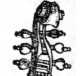

| Bach: facsimiles of autographs, primary sources, first editions & a selection of research material | Beethoven: facsimiles of autographs, primary sources, first editions & a selection of research material | ||
| Dance: dance music, ballets, masques, treatises and literature | Ethnomusicology: a selection of publications on ethnomusicological and folkloric subjects (few facsimiles) | ||
|  | Gamba/Cello/Viola: music for viola da gamba, violoncello and viola, including methods and literature | Handel: facsimiles of autographs, primary sources, first editions & a selection of research material |